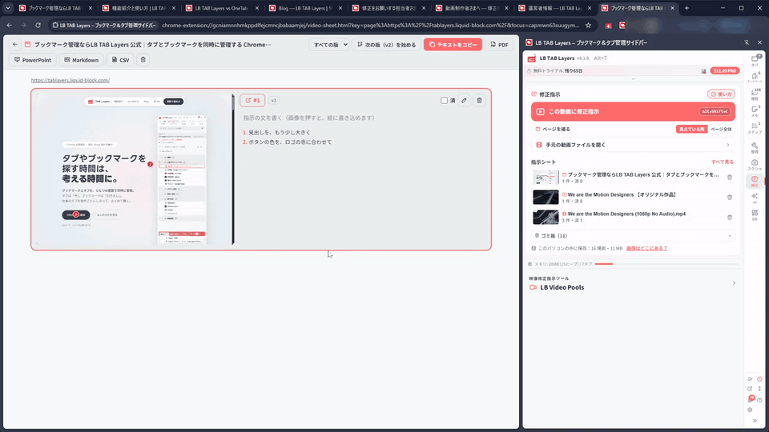

指示シートは、修正指示が動画・ページごとにまとまる画面です。動画は再生位置の順に並び、再生位置を押すとその場面へ移ります。直したものには「済」、直ってきた動画には「次の版」として v2 の指示を書けます。送るときは「テキストをコピー」でチャットに貼るか、PDF・PowerPoint・Markdown・CSV で書き出します。消したものはゴミ箱に入り、30日は戻せます。
📌 修正指示は、3.0.4 から使えます。この記事の画面とボタンの名前は、3.0.5 のものです。PRO の機能ですが、お試し期間中はすべて使えます。
修正指示は、書いて終わりではありません。相手に送り、直ったかを確かめ、次の版でまた書く。指示シートは、その行き来のあいだ、指示を置いておく場所です。
指示シートの見方
- 並び：動画は再生位置の順、Web ページは撮った順です
- 再生位置を押すと、その場面へ：開いている動画のタブがその位置まで移ります。閉じていれば、時間つきの URL で開きます
- その場で直す：場面ぜんたいへの文は、シートの上でそのまま書き直せます
- 済：直ったものにチェックを付けると、薄く表示されます
指示シートは、サイドパネルの「修正」の下の一覧からいつでも開けます。

版：v1 の次は v2
直ってきた動画を見て、また指示が出る。そのときは「次の版を始める」を押します。そこから書いた指示は v2 として分かれるので、「前回の指示」と「今回の指示」が混ざりません。「すべての版」から、版ごとに絞って見られます。

書き出しは5つ
| 書き出し | 使いどころ |
|---|---|
| テキストをコピー | チャット・メールにそのまま貼る。いちばん早い |
| 画像と指示を並べた修正指示書として送る | |
| PowerPoint | 打合せで画面に映す。社内で回す |
| Markdown | メモアプリや課題の管理に。動画は再生位置つきのリンクになる |
| CSV | 表計算や制作管理の表に（再生位置・番号・指示・済・版） |
再生位置の表示は、時間（00:08.78）・フレーム数（263f）・分:秒:フレーム（00:08:23）から選べます。選んだ形は、書き出しにもそのまま入ります。


ゴミ箱：30日は戻せる
- シートまるごとも、場面ひとつも消せます
- 消した直後は「元に戻す」が出ます
- あとからでも、ゴミ箱の中から戻せます。30日たつと自動で消えます
- 「完全に消す」「空にする」は、確かめてから行います
- 場面の数と、使っている大きさも表示されます
画像はどこにある？
撮った画像と指示は、このパソコンの Chrome の中（拡張の保存領域）にあります。
- どこにも送りません。当社のサーバーにも送りません
- パネルを閉じても、Chrome を再起動しても残ります
- エクスプローラー（Finder）のフォルダには見えません。ファイルとして残したいときは、PDF などで書き出します
- 拡張を削除すると消えます。残したいものは、その前に書き出してください
同じ説明は、画面の「画像はどこにある？」からいつでも読めます。
【実体験】「どれが済んだか」を一目でわかるように
修正のやりとりで困るのは、指示の数より、「どれが直って、どれがまだか」がわからなくなることでした。チャットをさかのぼって数えるかわりに、シートで「済」を付けていく。v2 が来たら版を分ける。それだけで追えるように、この形にしました。
知っておきたいこと
- 共有：指示シートそのものを、ほかの人と同時に開くことはできません。送るときは書き出します
- 別のパソコン：保存はパソコンごとです。別のパソコンには引き継がれません
- プラン：PRO の機能です。お試し期間中はすべて使えます
画像をまとめて保存する方法は「【機能ガイド】一括スクリーンショット」もどうぞ。
🎬 修正指示のほかにも、いろいろできます。パネルを開く、保存したタブを開く、閉じたタブを履歴から戻す、ページにひもづけたメモ、ピンバーまで。ブラウザとパネルの動きをそのまま見られる 操作ガイド（動く画面で見る10の操作） にまとめています。入れたばかりの方は クイックチュートリアル（5分） からどうぞ。
よくある質問
Q. 修正指示を PDF や PowerPoint にできますか？
できます。指示シートから、PDF・PowerPoint・Markdown・CSV で書き出せます。「テキストをコピー」で、チャットやメールにそのまま貼ることもできます。
Q. 直った指示と、まだの指示を分けられますか？
直ったものに「済」のチェックを付けると、薄く表示されます。書き出しにも「済」が入ります。
Q. 2回めの修正は、1回めと分けて書けますか？
「次の版を始める」を押すと、そこからの指示は v2 として分かれます。「すべての版」から、版ごとに絞って見られます。
Q. まちがえて消した指示は戻せますか？
消した直後は「元に戻す」で戻せます。あとからでも、ゴミ箱の中から戻せます。ゴミ箱の中身は30日たつと自動で消えます。
Q. 撮った画像は、パソコンのどこにありますか？
このパソコンの Chrome の中（拡張の保存領域）です。どこにも送りません。フォルダには見えないので、ファイルとして残したいときは書き出します。拡張を削除すると消えます。
▶ 実際の操作を動画で見る
サイドバーで、ブックマークとタブをいっしょに管理する様子です。